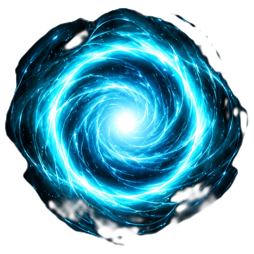
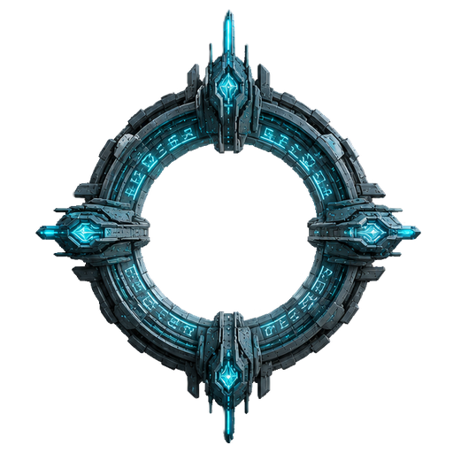

Джампгейт — idle (кольцо) → активация 3с (вихрь) → прыжок


▶ Подлёт → активация → прыжок
idle: только кольцо · активация: вихрь открывается 3 сек · прыжок: корабль ныряет в центр + вспышка → вихрь гаснет. vortex scale 0.52.